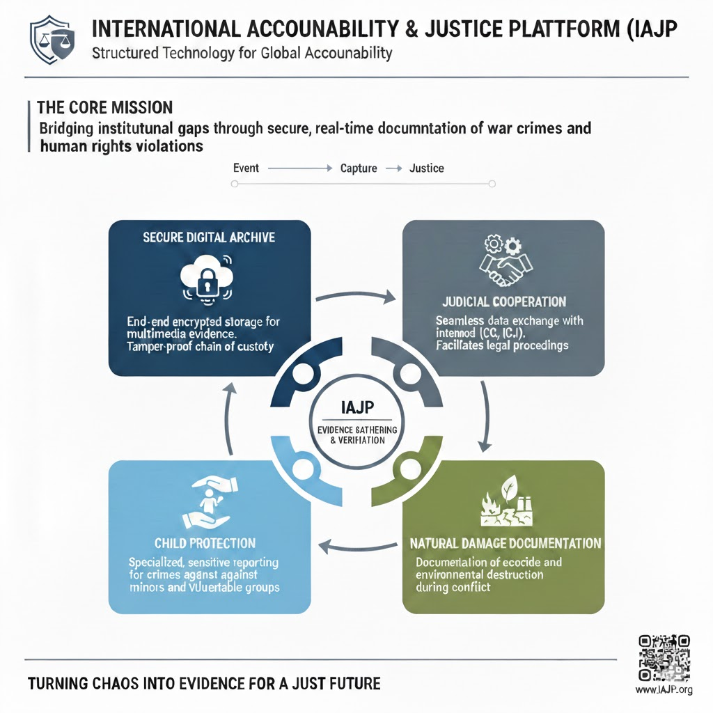

Description of the Innovative Solution
The proposed International Accountability and Justice Platform (IAJP) refers to institutional multilayered breakdown through structured, technological accountability mechanisms. Its goal is to ease the process of gathering and documenting evidence of the war crimes and crimes that are committed as a result of the war.
Structure of the Platform
- Develop Strongly Secured Digital Evidence Archive
- Judicial Cooperation
- Child Protection Reporting
- Natural Damage Documentation

Stages of Implemenation
| Stage | Timeframe | Key actions |
|---|---|---|
| Stage One | Up to 6 months | Establish UN coordinating group and develop digital infrastructure |
| Stage Two | Up to 1 year | Integrate system with domestic justice system and develop child protection monitoring |
| Stage Three | Over a year | Integrate platform within international mechanisms |